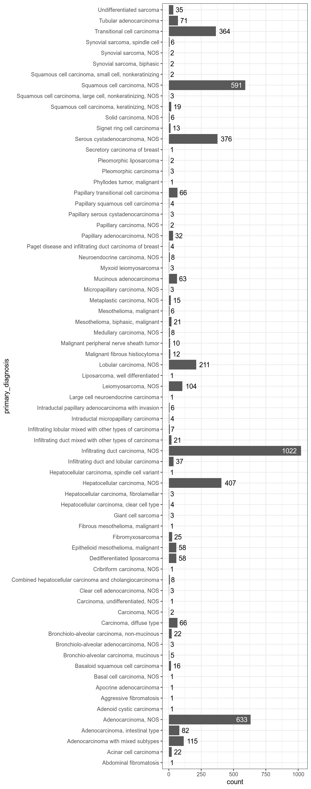

3 Results
3.1 Dataset properties
TCGA projects are described here and here.
Figure 3.1: Available metadata for samples from selected projects.

Figure 3.2: Available metadata for samples from selected projects.
shortLetterCode
- TP
- TR
- TM
- NT
definition
- Primary solid Tumor
- Recurrent Solid Tumor
- Metastatic
- Solid Tissue Normal
sample_type_id
- 01
- 02
- 06
- 11
sample_type
- Primary Tumor
- Recurrent Tumor
- Metastatic
- Solid Tissue Normal
synchronous_malignancy
- No
- Not Reported
- Yes
tumor_stage
- not reported
- stage ib
- stage i
- stage iia
- stage iii
- stage iib
- stage iiia
- stage iva
- stage iiic
- stage iiib
- stage ia
- stage iv
- stage ii
- stage x
- stage ivb
tissue_or_organ_of_origin
- Overlapping lesion of connective, subcutaneous and other soft tissues
- Connective, subcutaneous and other soft tissues of pelvis
- Connective, subcutaneous and other soft tissues of abdomen
- Connective, subcutaneous and other soft tissues of lower limb and hip
- Connective, subcutaneous and other soft tissues of thorax
- Connective, subcutaneous and other soft tissues of trunk, NOS
- Retroperitoneum
- Uterus, NOS
- Connective, subcutaneous and other soft tissues, NOS
- Descending colon
- Short bones of lower limb and associated joints
- Myometrium
- Connective, subcutaneous and other soft tissues of head, face, and neck
- Connective, subcutaneous and other soft tissues of upper limb and shoulder
- Ovary
- Kidney, NOS
- Spinal meninges
- Long bones of lower limb and associated joints
- Stomach, NOS
- Spermatic cord
- Isthmus uteri
- Specified parts of peritoneum
- Peripheral nerves and autonomic nervous system of upper limb and shoulder
- Tongue, NOS
- Corpus uteri
- Lower third of esophagus
- Middle third of esophagus
- Esophagus, NOS
- Cardia, NOS
- Upper third of esophagus
- Thoracic esophagus
- Head of pancreas
- Pancreas, NOS
- Body of pancreas
- Tail of pancreas
- Overlapping lesion of pancreas
- Pleura, NOS
- Breast, NOS
- Overlapping lesion of breast
- Lower-inner quadrant of breast
- Upper-outer quadrant of breast
- Lower-outer quadrant of breast
- Upper-inner quadrant of breast
- Liver
- Bladder, NOS
- Lateral wall of bladder
- Posterior wall of bladder
- Trigone of bladder
- Dome of bladder
- Anterior wall of bladder
- Bladder neck
- Ureteric orifice
- Fundus of stomach
- Body of stomach
- Gastric antrum
- Lesser curvature of stomach, NOS
- Pylorus
- Middle lobe, lung
- Lower lobe, lung
- Upper lobe, lung
- Lung, NOS
- Main bronchus
- Overlapping lesion of lung
primary_diagnosis
- Leiomyosarcoma, NOS
- Undifferentiated sarcoma
- Fibromyxosarcoma
- Dedifferentiated liposarcoma
- Malignant peripheral nerve sheath tumor
- Malignant fibrous histiocytoma
- Synovial sarcoma, spindle cell
- Abdominal fibromatosis
- Synovial sarcoma, NOS
- Synovial sarcoma, biphasic
- Pleomorphic liposarcoma
- Myxoid leiomyosarcoma
- Aggressive fibromatosis
- Giant cell sarcoma
- Liposarcoma, well differentiated
- Serous cystadenocarcinoma, NOS
- Papillary serous cystadenocarcinoma
- Squamous cell carcinoma, NOS
- Adenocarcinoma, NOS
- Squamous cell carcinoma, keratinizing, NOS
- Mucinous adenocarcinoma
- Tubular adenocarcinoma
- Basaloid squamous cell carcinoma
- Infiltrating duct carcinoma, NOS
- Neuroendocrine carcinoma, NOS
- Adenocarcinoma with mixed subtypes
- Carcinoma, undifferentiated, NOS
- Fibrous mesothelioma, malignant
- Mesothelioma, malignant
- Epithelioid mesothelioma, malignant
- Mesothelioma, biphasic, malignant
- Lobular carcinoma, NOS
- Infiltrating duct and lobular carcinoma
- Metaplastic carcinoma, NOS
- Infiltrating duct mixed with other types of carcinoma
- Papillary carcinoma, NOS
- Infiltrating lobular mixed with other types of carcinoma
- Intraductal papillary adenocarcinoma with invasion
- Paget disease and infiltrating duct carcinoma of breast
- Adenoid cystic carcinoma
- Medullary carcinoma, NOS
- Phyllodes tumor, malignant
- Basal cell carcinoma, NOS
- Large cell neuroendocrine carcinoma
- Intraductal micropapillary carcinoma
- Carcinoma, NOS
- Pleomorphic carcinoma
- Apocrine adenocarcinoma
- Secretory carcinoma of breast
- Cribriform carcinoma, NOS
- Hepatocellular carcinoma, NOS
- Combined hepatocellular carcinoma and cholangiocarcinoma
- Hepatocellular carcinoma, clear cell type
- Hepatocellular carcinoma, fibrolamellar
- Hepatocellular carcinoma, spindle cell variant
- Clear cell adenocarcinoma, NOS
- Transitional cell carcinoma
- Papillary transitional cell carcinoma
- Papillary adenocarcinoma, NOS
- Carcinoma, diffuse type
- Adenocarcinoma, intestinal type
- Signet ring cell carcinoma
- Squamous cell carcinoma, large cell, nonkeratinizing, NOS
- Papillary squamous cell carcinoma
- Squamous cell carcinoma, small cell, nonkeratinizing
- Bronchio-alveolar carcinoma, mucinous
- Bronchiolo-alveolar carcinoma, non-mucinous
- Acinar cell carcinoma
- Solid carcinoma, NOS
- Micropapillary carcinoma, NOS
- Bronchiolo-alveolar adenocarcinoma, NOS
prior_malignancy
- no
- yes
- not reported
year_of_diagnosis
- 2012
- 2013
- 2007
- 2011
- 2008
- 1998
- 2006
- 2003
- 2004
- 1997
- 2009
- NA
- 2005
- 2002
- 2010
- 1995
- 1994
- 2000
- 1996
- 2001
- 1999
- 1992
- 1993
- 1988
- 1989
- 1990
- 1991
prior_treatment
- No
- Yes
- Not Reported
morphology
- 8890/3
- 8805/3
- 8811/3
- 8858/3
- 9540/3
- 8830/3
- 9041/3
- 8822/1
- 9040/3
- 9043/3
- 8854/3
- 8896/3
- 8821/1
- 8802/3
- 8851/3
- 8441/3
- 8460/3
- 8070/3
- 8140/3
- 8071/3
- 8480/3
- 8211/3
- 8083/3
- 8500/3
- 8246/3
- 8255/3
- 8020/3
- 9051/3
- 9050/3
- 9052/3
- 9053/3
- 8520/3
- 8522/3
- 8575/3
- 8523/3
- 8050/3
- 8524/3
- 8503/3
- 8541/3
- 8200/3
- 8510/3
- 9020/3
- 8090/3
- 8013/3
- 8507/3
- 8010/3
- 8022/3
- 8401/3
- 8502/3
- 8201/3
- 8170/3
- 8180/3
- 8174/3
- 8171/3
- 8173/3
- 8310/3
- 8120/3
- 8130/3
- 8260/3
- 8145/3
- 8144/3
- 8490/3
- 8072/3
- 8052/3
- 8073/3
- 8253/3
- 8252/3
- 8550/3
- 8230/3
- 8265/3
- 8250/3
icd_10_code
- C49.8
- C49.5
- C49.4
- C49.2
- C49.3
- C49.6
- C48.0
- C55
- C49.9
- C18.6
- C40.3
- C54.2
- C49.0
- C49.10
- C56.9
- C49.1
- C64.9
- C70.1
- C40.2
- C16.9
- C63.1
- C54.0
- C48.1
- C71.0
- C47.1
- C02.9
- C54.9
- C48.2
- C15.5
- C15.4
- C15.9
- C16.0
- C15.3
- C25.0
- C25.9
- C25.1
- C25.2
- C25.8
- C38.4
- C45.0
- C34.90
- C50.9
- C50.8
- C50.3
- C50.4
- C50.5
- C50.2
- C50.919
- C22.0
- C67.9
- C67.2
- C67.4
- C67.0
- C67.1
- C67.3
- C67.5
- C67.6
- C16.1
- C16.2
- C16.3
- C16.5
- C34.2
- C34.3
- C34.1
- C34.9
- C34.8
- C34.10
- C34.0
- C34.30
site_of_resection_or_biopsy
- Overlapping lesion of connective, subcutaneous and other soft tissues
- Connective, subcutaneous and other soft tissues of pelvis
- Connective, subcutaneous and other soft tissues of abdomen
- Connective, subcutaneous and other soft tissues of lower limb and hip
- Connective, subcutaneous and other soft tissues of thorax
- Connective, subcutaneous and other soft tissues of trunk, NOS
- Retroperitoneum
- Uterus, NOS
- Connective, subcutaneous and other soft tissues, NOS
- Descending colon
- Short bones of lower limb and associated joints
- Myometrium
- Connective, subcutaneous and other soft tissues of head, face, and neck
- Connective, subcutaneous and other soft tissues of upper limb and shoulder
- Ovary
- Kidney, NOS
- Spinal meninges
- Long bones of lower limb and associated joints
- Stomach, NOS
- Spermatic cord
- Isthmus uteri
- Specified parts of peritoneum
- Peripheral nerves and autonomic nervous system of upper limb and shoulder
- Tongue, NOS
- Corpus uteri
- Lower third of esophagus
- Middle third of esophagus
- Esophagus, NOS
- Cardia, NOS
- Upper third of esophagus
- Thoracic esophagus
- Head of pancreas
- Pancreas, NOS
- Body of pancreas
- Tail of pancreas
- Overlapping lesion of pancreas
- Pleura, NOS
- Lung, NOS
- Breast, NOS
- Overlapping lesion of breast
- Lower-inner quadrant of breast
- Upper-outer quadrant of breast
- Lower-outer quadrant of breast
- Upper-inner quadrant of breast
- Liver
- Bladder, NOS
- Lateral wall of bladder
- Posterior wall of bladder
- Trigone of bladder
- Dome of bladder
- Anterior wall of bladder
- Bladder neck
- Ureteric orifice
- Fundus of stomach
- Body of stomach
- Gastric antrum
- Lesser curvature of stomach, NOS
- Pylorus
- Middle lobe, lung
- Lower lobe, lung
- Upper lobe, lung
- Main bronchus
- Overlapping lesion of lung
alcohol_history
- Not Reported
- Yes
- No
ethnicity
- not hispanic or latino
- not reported
- hispanic or latino
vital_status
- Alive
- Dead
- Not Reported
race
- black or african american
- white
- not reported
- asian
- american indian or alaska native
- native hawaiian or other pacific islander
age_at_index
- 45
- 66
- 56
- 55
- 86
- 68
- 37
- 59
- 74
- 50
- 62
- 57
- 76
- 65
- 47
- 61
- 63
- 72
- 52
- 69
- 80
- 60
- 64
- 53
- 78
- 40
- 90
- 38
- 35
- 84
- 31
- 24
- 44
- 73
- 43
- 41
- 58
- 83
- 77
- 54
- 48
- 20
- 70
- 82
- 75
- 42
- 79
- 46
- 67
- 49
- 27
- 34
- 87
- 71
- 85
- 51
- 29
- 81
- 89
- 33
- 28
- 36
- 88
- 30
- 39
- 32
- 26
- 18
- 23
- 16
- NA
- 25
- 17
project_id
- TCGA-SARC
- TCGA-OV
- TCGA-ESCA
- TCGA-PAAD
- TCGA-MESO
- TCGA-BRCA
- TCGA-LIHC
- TCGA-BLCA
- TCGA-STAD
- TCGA-LUSC
- TCGA-LUAD
name
- Sarcoma
- Ovarian Serous Cystadenocarcinoma
- Esophageal Carcinoma
- Pancreatic Adenocarcinoma
- Mesothelioma
- Breast Invasive Carcinoma
- Liver Hepatocellular Carcinoma
- Bladder Urothelial Carcinoma
- Stomach Adenocarcinoma
- Lung Squamous Cell Carcinoma
- Lung Adenocarcinoma
ajcc_pathologic_t
- NA
- T2
- T1
- T3
- T4
- T0
- T4a
- TX
- T1b
- T1a
- T1c
- T4b
- T4d
- T3a
- T2b
- T2a
- T3b
ajcc_pathologic_n
- NA
- N0
- N1
- N3
- N2
- NX
- N1b
- N3a
- N1mi
- N1a
- N0 (i-)
- N2a
- N0 (i+)
- N0 (mol+)
- N1c
- N3b
- N3c
ajcc_pathologic_m
- NA
- M0
- M1a
- MX
- M1
- cM0 (i+)
- M1b
VNN1_tertiles_by_state
- T1
- T2
- T3
OMA1_tertiles_by_state
- T2
- T1
- T3
OPA1_tertiles_by_state
- T2
- T1
- T3
VNN1_tertiles_by_primary_diagnosis
- T1
- T2
- T3
OMA1_tertiles_by_primary_diagnosis
- T2
- T3
- T1
OPA1_tertiles_by_primary_diagnosis
- T3
- T2
- T1
VNN1_tertiles_by_project_id
- T1
- T3
- T2
OMA1_tertiles_by_project_id
- T3
- T2
- T1
OPA1_tertiles_by_project_id
- T3
- T1
- T2